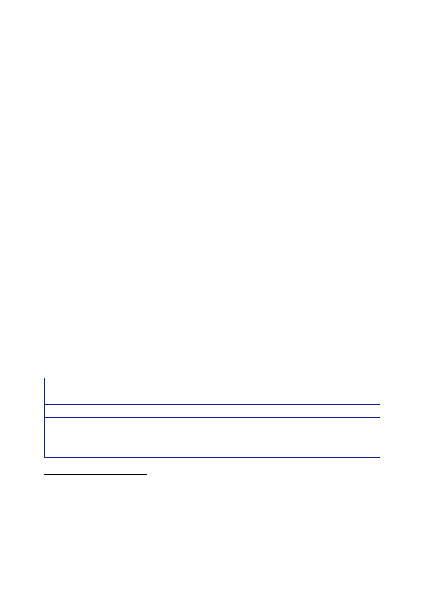

13.1 |
Resources
1.
This Section
addresses:
•
the cost of
the UK’s involvement in Iraq;
•
the main
sources of funding for the UK’s involvement, the different
arrangements
for funding
military operations and civilian activities, and how
those
arrangements
changed;
•
the
estimates of the cost of military operations and civilian
activities that were
made before
the invasion, and the extent to which those estimates
influenced
key
decisions;
•
the imposition
of controls over the MOD’s management of its resources by
the
Treasury in
September 2003;
•
the
allocations for civilian activities that were made before, during
and after the
conflict;
and
•
how
expenditure was scrutinised.
2.
This Section
does not address how departments used the resources available
to
them.
Specifically:
•
The
provision of military equipment is considered in Sections 6.3 and
14.
•
The UK’s
support for reconstruction is considered in Section
10.
•
The UK’s
support for Security Sector Reform is considered in Section
12.
3.
The direct
cost to the UK Government of its intervention in Iraq between the
UK
financial
years 2002/03 and 2009/10 was at least £9.2bn in cash
terms1
(£11.83bn
in
2016
prices).2
That
comprised:
Category
Military
operations
Humanitarian
and development assistance3
Diplomatic
representation4
Inter‑departmental
Pools and peacekeeping
Total
£bn
8.20
0.58
0.30
0.16
9.24
Percentage
89
6
3
2
100
1
The
Government has confirmed that the expenditure figures for DFID and
the FCO that were provided by
Sir Nicholas
Macpherson, Director General in charge of Public Expenditure from
2001 to 2005 and then
Permanent
Secretary at the Treasury, in his statement to the Inquiry of 15
January 2010, were inaccurate.
That
statement was published by the Inquiry on 22 January
2010.
2
2016 price
equivalent calculated using Consumer Price Inflation Time Series
Dataset December 2015,
Office for
National Statistics.
3
Includes
the imputed share of UK contributions to multilateral
organisations.
4
Includes
support provided by the FCO to UK secondees to the Coalition
Provisional Authority (CPA).
445